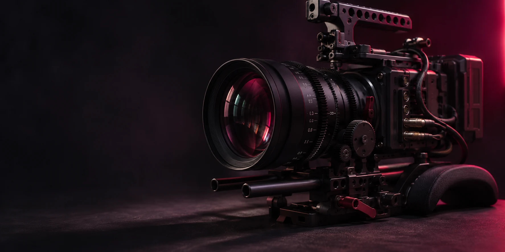

Politik und Gesellschaft
Film und
Fotografie
Wir drehen Reportagen und Interviews, dokumentieren Veranstaltungen und übernehmen die Nachbearbeitung.
Unsere Leistungen
Alle LeistungenFormatbeispiele
KI-generierte Beispielbilder